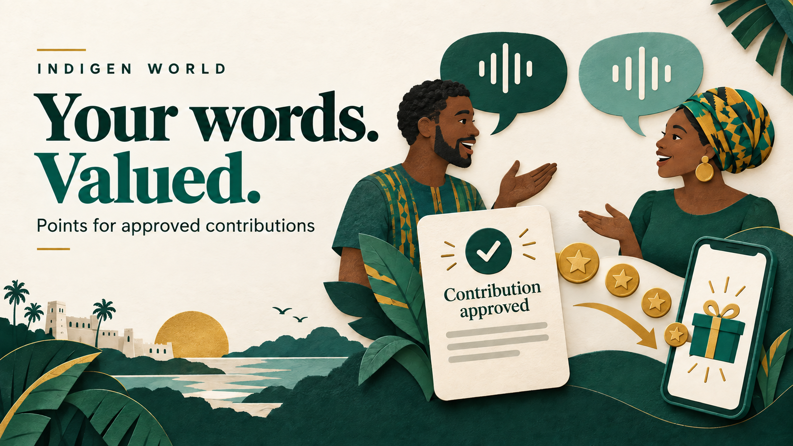
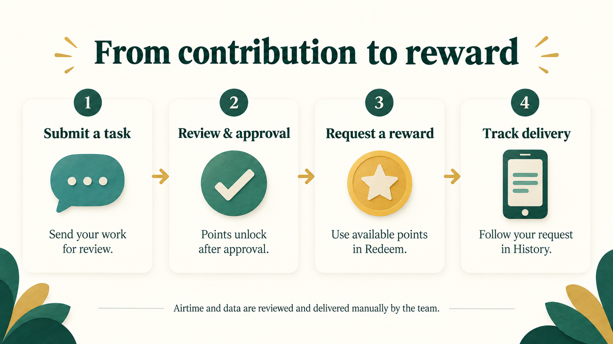

Contributor points are tied to review approval. Submit your Kasem expression in Tasks, then wait for the Review Desk to validate it. When it is approved, the points appear in your available balance on the Points tab. A submission still awaiting review does not earn points yet.
At the initial rate, each approved expression earns 10 points, up to 300 points for approvals in one UTC day. A revision of the same expression cannot earn a second award. Administrators can adjust the rate and daily limit for future approvals.
Earlier submissions are included when they have reached Approved or Published status. Work still waiting for review can earn points when it is approved. The Streak feature follows daily submissions, so contributors can keep a streak while their work moves through review.

With enough available points, contributors can request Ghana airtime or mobile data in the Redeem tab and follow the request in History. The team reviews and delivers those rewards manually.
The contributor portal, admin controls, and rewards services were deployed on September 26, 2026. Eligible earlier approvals have been credited. Rewards are available to active contributors; airtime and data requests require manual review and delivery by the team.